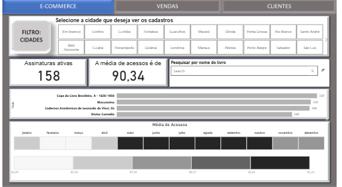

Dashboard Estratégico – E-Commerce de Livros
O objetivo deste projeto é criar um dashboard interativo no Power BI para otimizar as operações de um e-commerce de livros com dados fictícios.
🎯 Problema de Negócio
O desafio na criação de um dashboard é transformar dados brutos em insights. Neste caso, a ideia é criar um painel que oferecesse uma visão clara e abrangente das vendas, do perfil dos clientes e das informações do e-commerce.
📊 Modelagem de Dados
Foi utilizado modelo dimensional em esquema estrela, com tabelas fato de vendas e dimensões de: Cliente, Produto, Categoria e Calendário.
📈 Principais KPIs
- Assinaturas ativas
- Média de acessos
- Metas de vendas
- Volume de Vendas
- Crescimento Mensal (%)
- Idade, profissão e localização da maior parte dos clientes
🛠 Stack Utilizada
Power BI • DAX • Power Query • Modelagem Dimensional
🖼 Visualizações


← Voltar para Portfólio